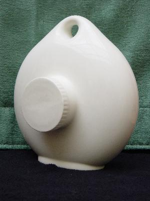

| Name |
Unnamed |
| Manufacturer |
Royal Doulton, England |
| Writing |
|
| Markings |
|
| Notes |
This is obviously an
up-market bottle, very light and made of china,
not earthenware. I have seen these hot water
bottles with shell-like shapes cast into the
pottery, however when I tried to buy them, I was
outbid by Royal Doulton collectors (boo hiss!),
not by a hot water bottle collector - there is
clearly a cross-over market for fine pieces. |
|
 |